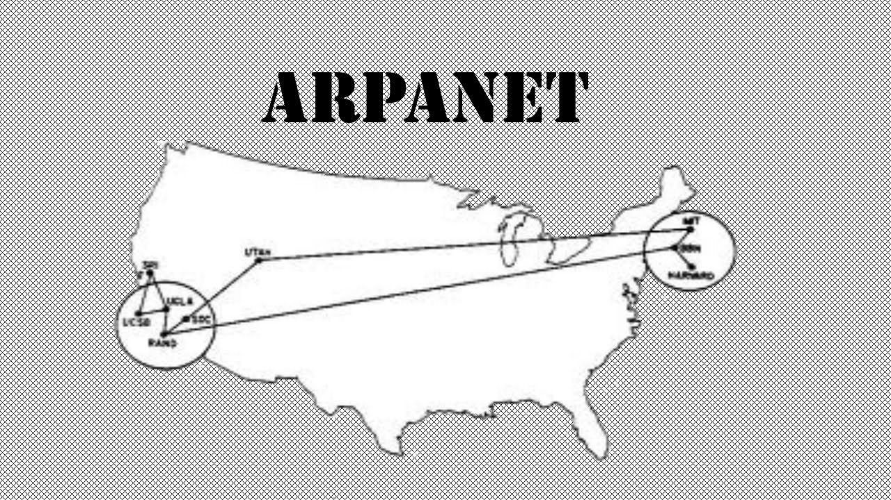

Inicia la construcción de la primera Computadora Electrónica.

Se culmina la computadora ENIAC, en Pensilvania.
Inicia la era militar: Las móquinas eran utilizadas para aplicaciones militares. Al final de la 2da Guerra Mundial, fue relevante en la criptografía por Alan Turín, padre de la Informática.